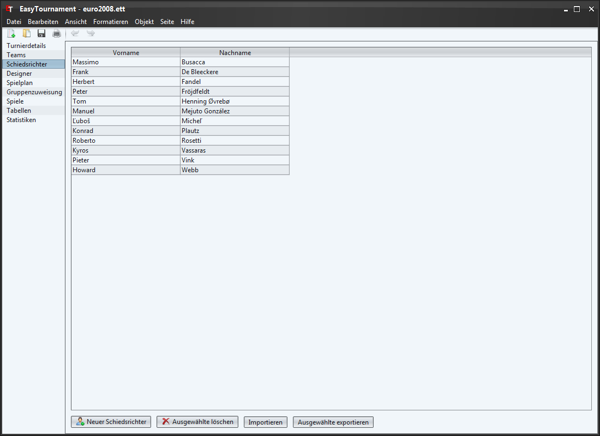
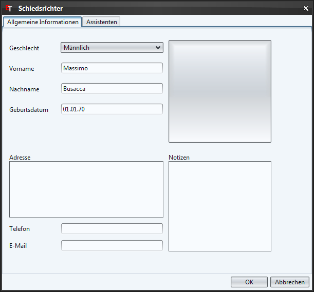
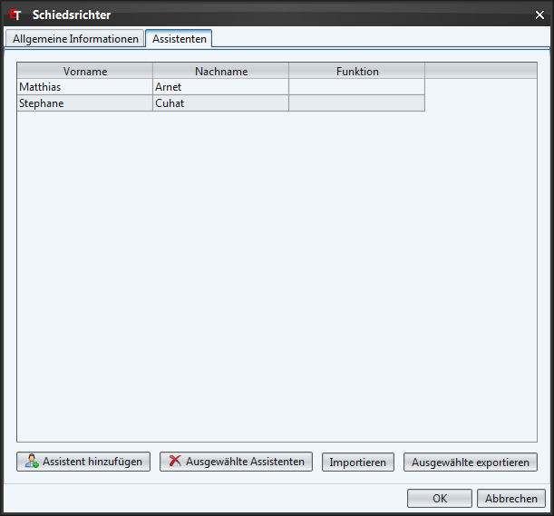

Auf dieser Seite lassen sich Schiedsrichter erfassen. Dies kann einerseits duch Klicken auf die entsprechende Schaltfläche unten links oder über das Kontext-Menü (rechte Maustaste) gemacht werden.
Mit einem Doppelklick auf einen Schiedsrichter oder über das Kontextmenü (rechte Maustaste) lassen sich Schiedsrichter bearbeiten.
Über die "Importieren" Schaltfläche lassen sich Schiedsrichter aus einem anderen Turnier importieren.
Sie können die Schiedsrichter auch im XML-Format speichern um sie in anderen Anwendungen weiterverwenden zu können. Dies erreicht man indem man die zu exportierenden Schiedsrichter markiert und danach auf die Schaltfläche "Ausgewählte exportieren" klickt.

Um ein Bild für den Schiedsichter auszuwählen klicken sie auf die quadratische Schaltfläche oben rechts und wählen die entsprechende Datei.
Möchten Sie das Bild wieder löschen, dann klicken sie mit der rechten Maustaste auf das Bild und wählen im erscheinenden Kontextmenü den Eintrag "Bild löschen".

Im Tab "Assistenten" lassen sich die Assistenden des Schiedrichters hinzufügen. Das Vorgehen ist genau gleich wie bei den Schiedsrichtern. Weitere Details zum Erfassen von Assistenten finden sich im Kapitel Assistenten.